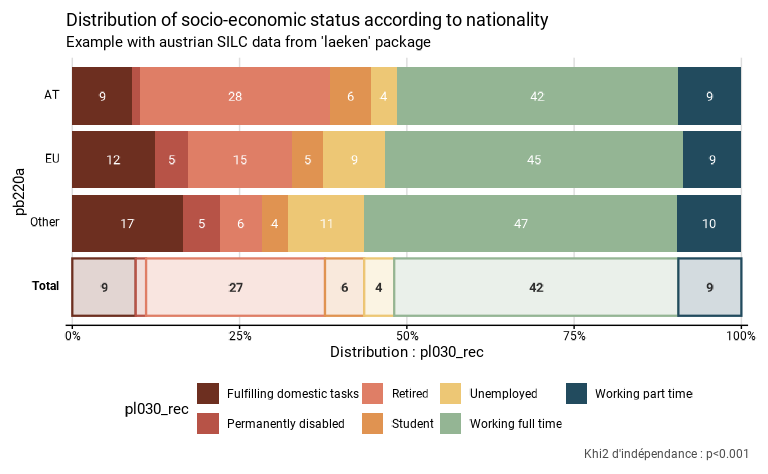
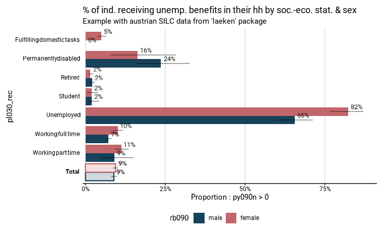
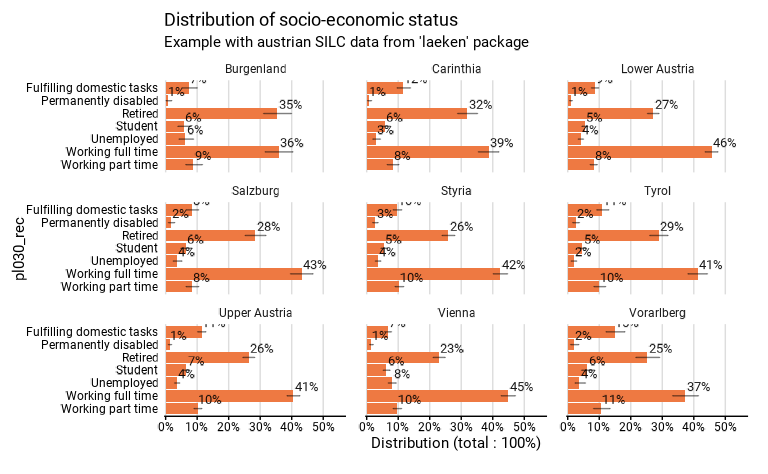
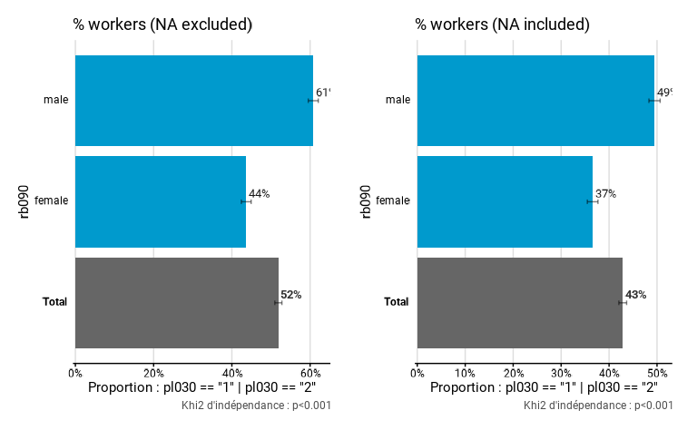
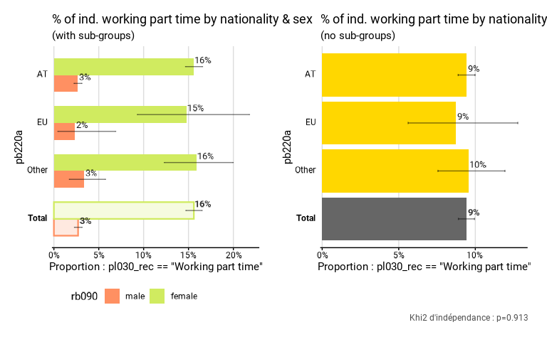
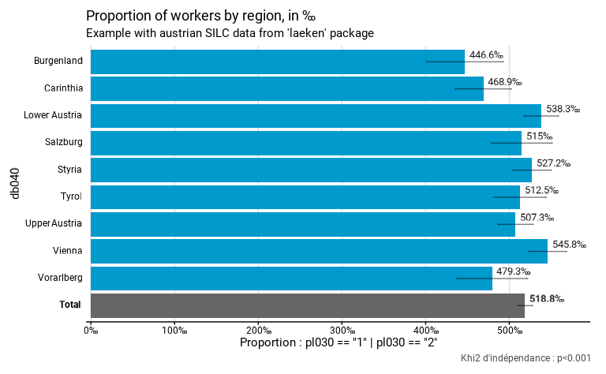

L’objectif de fonctionr est de faciliter l’analyse de
données issues de sondages complexes, dont la manipulation est parfois
laborieuse. fonctionr a été développé dans l’idée de
réduire la taille du code à écrire pour produire les résultats
descriptifs et d’analyses bivariées les plus courants.
Le package a également été construit pour pouvoir utiliser
directement les résultats produits dans un rapport. Ainsi,
fonctionr produit en une seule fonction : un tableau de
résultats avec les indicateurs voulus, les effectifs et leurs
intervalles de confiance ; un graphique prêt à être publié et le plus
souvent un test statistique le plus approprié aux variables étudiées. Il
est aussi possible de directement exporter ces trois résultats dans un
fichier Excel.
Ce guide se structure de la manière suivante. Dans un premier temps on décrit les différentes fonctions, ce qu’elles produisent et dans quels cas elles peuvent être utilisées. Dans un deuxième temps, on présente un tableau récapitulatif des arguments. De nombreux arguments revenant dans plusieurs fonctions, il est plus facile de présenter la structure globale de ceux-ci que de se répéter pour chaque fonction.
Présentation des différentes fonctions
La plupart des fonctions de fonctionr permettent, à
partir de données issues d’un sondage (complexe mais aussi simple), de
produire une liste qui contient la plupart du temps ces trois éléments
:
Un graphique qui permet la visualisation des indicateurs calculés avec leurs intervalles de confiance. Il s’agit d’un objet
ggplot2qui peut donc être modifié par la suite. Ce graphique est suffisamment finalisé pour être directement utilisable dans une publication ;Un ou plusieurs dataframe qui reprennent les chiffres sur base desquels le graphique est construit. Ceux-ci reprennent généralement le nom de l’indicateur, sa valeur, les bornes d’intervalle de confiance, le nombre de personnes dans l’échantillon dans chaque catégorie, l’estimation du nombre de personnes dans la population dans chaque catégorie et les bornes de l’intervalle de confiance de cette estimation ;
Les différents résultats d’un test statistique lorsqu’il y en a un qui est pertinent.
La plupart des fonctions permettent aussi d’exporter directement ces trois résultats dans un format Excel, dans l’idée de pouvoir facilement communiquer les résultats à une tierce personne, ou à un graphiste dans le cas du travail de mise en page d’un rapport.
Dans la suite de cette partie, nous passons les fonctions en revue en indiquant quels sont leurs objectifs et spécificités.
distrib_discrete() : distribution d’une variable
catégorielle
distrib_discrete(), avec distrib_d() comme
alias, calcule la distribution (en proportions relatives) des
différentes modalités d’une variables qualitative. Pour l’exemple, nous
utilisons la base de données anonymisée de l’enquête SILC menée en
Autriche en 2006, contenue dans le package laeken. Nous
chargeons d’abord les données et recodons le statut socio-économiques
(pl030) pour lui donner des labels intelligibles, utilisés
dans la suite des exemples :
library(fonctionr)
library(patchwork)
# Loading of data
data(eusilc, package = "laeken")
# Recoding eusilc$pl030 into eusilc$pl030_rec
eusilc$pl030_rec <- NA
eusilc$pl030_rec[eusilc$pl030 == "1"] <- "Working full time"
eusilc$pl030_rec[eusilc$pl030 == "2"] <- "Working part time"
eusilc$pl030_rec[eusilc$pl030 == "3"] <- "Unemployed"
eusilc$pl030_rec[eusilc$pl030 == "4"] <- "Student"
eusilc$pl030_rec[eusilc$pl030 == "5"] <- "Retired"
eusilc$pl030_rec[eusilc$pl030 == "6"] <- "Permanently disabled"
eusilc$pl030_rec[eusilc$pl030 == "7"] <- "Fulfilling domestic tasks"Ci-dessous, la fonction distrib_d() décrit la
distribution des différents statuts socio-économiques dans le dataframe
eusilc, en utilisant la variable de pondération
rb0501. Comme on le voit, les variables sont
indiquées sans mentionner le dataframe (var au lieu de
df$var) et sans guillemets, à la manière de la syntaxe du
tidyverse.
# Computation, taking sample design into account
eusilc_dist_d <- distrib_d(
data = eusilc,
quali_var = pl030_rec,
weights = rb050,
probs = c(.2, .15, .1, .1, .25, .1, .1),
title = "Distribution of socio-economic status",
subtitle = "Example with austrian SILC data from 'laeken' package"
)Nous affichons ensuite le graphique contenu dans la liste produite :
eusilc_dist_d$graph
La liste contient également un dataframe tab qui reprend
les chiffres sur base desquels le graphique est construit. Il comprend
les colonnes suivantes : le nom de la modalité (pl030_rec),
l’estimation de la proportion de la population appartenant à la modalité
(prop), les bornes inférieure (prop_low) et
supérieure (prop_upp) de l’intervalle de confiance de cette
estimation à un niveau de confiance de 95%, le nombre de personnes dans
l’échantillon appartenant à la modalité (n_sample),
l’estimation du nombre de personnes dans la population appartenant à la
modalité (n_weighted), et les bornes inférieure
(n_weighted_low) et supérieure
(n_weighted_upp) de l’intervalle de confiance de cette
estimation à un niveau de confiance de 95% :
eusilc_dist_d$tab
#> # A tibble: 7 × 8
#> pl030_rec prop prop_low prop_upp n_sample n_weighted n_weighted_low
#> <fct> <dbl> <dbl> <dbl> <int> <dbl> <dbl>
#> 1 Fulfilling domest… 0.0948 0.0897 0.100 1207 640311. 605407.
#> 2 Permanently disab… 0.0155 0.0133 0.0180 178 104930. 89217.
#> 3 Retired 0.267 0.259 0.276 3146 1806954. 1750021.
#> 4 Student 0.0586 0.0545 0.0629 736 395829. 367611.
#> 5 Unemployed 0.0449 0.0411 0.0489 518 303252. 277166.
#> 6 Working full time 0.425 0.416 0.434 5162 2869868. 2805298.
#> 7 Working part time 0.0941 0.0890 0.0995 1160 636121. 600495.
#> # ℹ 1 more variable: n_weighted_upp <dbl>La liste contient pour finir le résultat du test statistique dans
l’objet test.stat. Dans ce cas, il s’agit du khi2
d’adéquation. Ce test est réalisé avec comme hypothèse nulle la
répartition de la population selon le vecteur mentionné dans l’argument
probs = c(.2, .15, .1, .1, .25, .1, .1), c’est-à-dire 20%
de travailleurs à temps plein, 15% de travailleurs à temps partiel, 10%
de chômeurs, 10% d’étudiants, 25% de pensionnés, 10% de personnes en
incapacité permanente de travail et 10% de personnes au foyer. Si aucun
vecteur n’avait été mentionné dans probs, aucun test
n’aurait été effectué. Si le vecteur n’a pas une somme de 1, il est
ajusté pour avoir une telle somme. Notons que la p-valeur du test est
mentionnée sur le graphique.
eusilc_dist_d$test.stat
#>
#> Design-based chi-squared test for given probabilities
#>
#> data: ~pl030_rec
#> X-squared = 11462652, scale = 1300.5577, df = 2.9068, p-value < 2.2e-16
distrib_group_discrete() : distribution d’une variable
catégorielle par groupe
distrib_group_discrete(), avec
distrib_group_d() comme alias, calcule la distribution (en
pourcentages) des différentes modalités d’une variables qualitative
selon les modalités d’une autre variable qualitative, que l’on peut
considérer comme des groupes. Par rapport aux autres fonctions, faute de
représentation adéquate, les intervalles de confiance ne sont pas
indiqués sur le graphique. Le graphique et le tableau contiennent aussi
une modalité Total qui reprend l’estimation de la
distribution des différentes modalités pour l’ensemble de la population
de référence. Le test statistique repris est celui du khi2 de Pearson
avec l’ajustement de Rao & Scott. Ce test est réalisé avec comme
hypothèse nulle le fait que les deux variables qualitatives (d’intérêt
et de groupe) soient statistiquement indépendantes.
L’exemple ci-dessous montre la distribution des fréquences des
différents statuts socio-économiques (pl030_rec) selon la
nationalité (pb220a).
eusilc_dist_group_d <- distrib_group_d(
eusilc,
weights = rb050,
group = pb220a,
quali_var = pl030_rec,
title = "Distribution of socio-economic status according to nationality",
subtitle = "Example with austrian SILC data from 'laeken' package"
)
eusilc_dist_group_d$graph
eusilc_dist_group_d$tab
#> # A tibble: 28 × 9
#> pb220a pl030_rec prop prop_low prop_upp n_sample n_weighted n_weighted_low
#> <fct> <fct> <dbl> <dbl> <dbl> <int> <dbl> <dbl>
#> 1 AT Fulfillin… 0.0890 0.0838 0.0944 1036 548489. 516023.
#> 2 AT Permanent… 0.0119 0.00986 0.0142 125 73270. 60135.
#> 3 AT Retired 0.285 0.276 0.293 3055 1754654. 1698342.
#> 4 AT Student 0.0602 0.0559 0.0648 693 371222. 343916.
#> 5 AT Unemployed 0.0388 0.0351 0.0427 411 238841. 215672.
#> 6 AT Working f… 0.421 0.412 0.431 4689 2595137. 2532480.
#> 7 AT Working p… 0.0942 0.0888 0.0998 1064 580514. 546451.
#> 8 EU Fulfillin… 0.124 0.0887 0.166 38 20343. 13851.
#> 9 EU Permanent… 0.0498 0.0280 0.0811 15 8186. 4019.
#> 10 EU Retired 0.155 0.115 0.202 45 25429. 17928.
#> # ℹ 18 more rows
#> # ℹ 1 more variable: n_weighted_upp <dbl>
eusilc_dist_group_d$test.stat
#>
#> Pearson's X^2: Rao & Scott adjustment
#>
#> data: NextMethod()
#> F = 32.8, ndf = 11.957, ddf = 144750.034, p-value < 2.2e-16
prop_group() : proportion par groupe
prop_group() calcule des proportions pour les
différentes modalités d’une variable qualitative, que l’on peut
considérer comme des groupes. Pour indiquer la proportion à calculer,
l’utilisateur peut indiquer soit une variable dichotomique, soit
directement une expression (sans mentionner le dataframe et sans
guillemet, à la manière du tidyverse) à partir de laquelle
la proportion est calculée. L’exemple ci-dessous compare la proportion
d’individus qui bénéficient d’une allocation de chômage (calculé avec
l’expression py090n > 0) selon les différents statuts
socio-économiques (pl030_rec).
eusilc_prop <- prop_group(
eusilc,
group = pl030_rec,
prop_exp = py090n > 0,
weights = rb050,
title = "% of ind. receiving unemployment benefits in their hh by soc.-eco. stat.",
subtitle = "Example with austrian SILC data from 'laeken' package"
)
eusilc_prop$graph
Le graphique et le tableau contiennent aussi une modalité
Total qui reprend l’estimation de la proportion pour
l’ensemble de la population de référence. Dans le dataframe
tab produit, on trouve :
- l’estimation du nombre de personnes dans la population pour
lesquelles le critère de proportion est vérifié
(
n_true_weighted) accompagné de ses bornes inférieure (n_true_weighted_low) et supérieure (n_true_weighted_upp) de l’intervalle de confiance à un niveau de confiance de 95% ; - le nombre total de personnes dans la population pour lesquelles les
données sont valides2 (
n_tot_weighted) accompagné de ses bornes inférieure (n_tot_weighted_low) et supérieure (n_tot_weighted_upp) de l’intervalle de confiance.
Le test statistique réalisé est celui du khi2 de Pearson avec l’ajustement de Rao & Scott. Ce test est réalisé avec comme hypothèse nulle le fait que les deux variables qualitatives (la variable dichotomique proportion vraie-fausse et la variable de groupe) soient statistiquement indépendantes .
eusilc_prop$tab
#> # A tibble: 8 × 11
#> pl030_rec prop prop_low prop_upp n_sample n_true_weighted
#> <fct> <dbl> <dbl> <dbl> <int> <dbl>
#> 1 Fulfilling domestic tasks 0.0485 0.0369 0.0625 1207 31048.
#> 2 Permanently disabled 0.209 0.152 0.278 178 21975.
#> 3 Retired 0.0177 0.0134 0.0229 3146 31988.
#> 4 Student 0.0194 0.0106 0.0324 736 7666.
#> 5 Unemployed 0.732 0.691 0.770 518 221878.
#> 6 Working full time 0.0818 0.0743 0.0897 5162 234629.
#> 7 Working part time 0.110 0.0921 0.130 1160 69869.
#> 8 Total 0.0916 0.0864 0.0970 12107 619054.
#> # ℹ 5 more variables: n_true_weighted_low <dbl>, n_true_weighted_upp <dbl>,
#> # n_tot_weighted <dbl>, n_tot_weighted_low <dbl>, n_tot_weighted_upp <dbl>
eusilc_prop$test.stat
#>
#> Pearson's X^2: Rao & Scott adjustment
#>
#> data: NextMethod()
#> F = 485.82, ndf = 5.9943, ddf = 72567.0400, p-value < 2.2e-16La fonction prop_group() permet également de
différencier le calcul de proportions en différents sous-groupes au sein
des groupes. Par exemple, l’opération ci-dessous procède au même calcul
de la proportion des individus qui bénéficient d’une allocation de
chômage par statut socio-économique, mais en différenciant les hommes et
les femmes au sein de chacun de ces statuts. La variable de sous-groupe
doit être indiquée dans l’argument group.fill. Pour des
raisons de lisibilité, il n’y a pas de calcul de test statistique
lorsque des sous-groupes sont définis.
eusilc_prop_sex <- prop_group(
eusilc,
group = pl030_rec,
prop_exp = py090n > 0,
group.fill = rb090,
weights = rb050,
title = "% of ind. receiving unemp. benefits in their hh by soc.-eco. stat. & sex",
subtitle = "Example with austrian SILC data from 'laeken' package"
)
eusilc_prop_sex$graph
central_group() : valeur centrale (moyenne/médiane) par
groupe
central_group() compare la valeur centrale d’une
variable quantitative selon les modalités d’une variable qualitative,
que l’on peut considérer comme des groupes. Deux valeurs centrales sont
possibles :
- la moyenne, quand l’argument
type = "mean"ou pour l’aliasmean_group(); - la médiane, quand l’argument
type = "median"ou pour l’aliasmedian_group().
L’argument type est prédéfini pour les fonctions
“alias”. Il ne doit pas être utilisé par l’utilisateur s’il utilise les
fonctions “alias”. Pour indiquer la tendance centrale à calculer,
l’utilisateur peut indiquer soit une variable quantitative, soit
directement une expression (sans mentionner le dataframe et sans
guillemet, à la manière du tidyverse) à partir de laquelle
une nouvelle variable quantitative est calculée. L’exemple ci-dessous
compare le revenu équivalent mensuel moyen (calculé avec l’expression
eqIncome / 12) selon les différents statuts
socio-économiques des personnes (pl030_rec). Le graphique
et le tableau contiennent une modalité “Total” qui reprend l’estimation
de tendance centrale pour l’ensemble de la population de référence.
Pour mean_group(), le test statistique effectué est un
test de Wald, qui est un test équivalent à une analyse de variance
(ANOVA) mais pour des données issues d’un sondage complex3. Ce test est réalisé
avec comme hypothèse nulle le fait que les coefficients d’une régression
linéaire pour les modalités de la variable qualitative (les groupes) sur
la variable quantitative soient nuls. Pour median_group(),
le test statistique effectué est celui de Kruskal Wallis.
eusilc_mean <- mean_group(
eusilc,
group = pl030_rec,
quanti_exp = eqIncome / 12,
weights = rb050,
title = "Mean of monthly equivalised income in household by socio-economic status",
subtitle = "Example with austrian SILC data from 'laeken' package"
)
eusilc_mean$graph
eusilc_mean$tab
#> # A tibble: 8 × 8
#> pl030_rec mean mean_low mean_upp n_sample n_weighted n_weighted_low
#> <fct> <dbl> <dbl> <dbl> <int> <dbl> <dbl>
#> 1 Fulfilling domesti… 1296. 1255. 1337. 1207 640311. 605407.
#> 2 Permanently disabl… 1330. 1206. 1454. 178 104930. 89217.
#> 3 Retired 1720. 1688. 1751. 3146 1806954. 1750021.
#> 4 Student 1355. 1296. 1414. 736 395829. 367611.
#> 5 Unemployed 1456. 1382. 1531. 518 303252. 277166.
#> 6 Working full time 1895. 1870. 1920. 5162 2869868. 2805298.
#> 7 Working part time 1591. 1545. 1637. 1160 636121. 600495.
#> 8 Total 1703. 1686. 1719. 12107 6757264. 6702060.
#> # ℹ 1 more variable: n_weighted_upp <dbl>
eusilc_mean$test.stat
#> Wald test for pl030_rec
#> in svyglm(formula = fmla, design = data_W)
#> F = 137.4607 on 6 and 12100 df: p= < 2.22e-16
many_val() : calculer plusieurs indicateurs
many_val() réalise des calculs de proportion ou de
tendance centrale simultanément pour plusieurs variables différentes. La
fonction permet de calculer trois résultats différents :
- Le calcul de proportions quand l’argument
type = "prop"ou pour l’aliasmany_prop(); - Le calcul de moyennes quand l’argument
type = "mean"ou pour l’aliasmany_mean(); - Le calcul de médianes quand l’argument
type = "median"ou pour l’aliasmany_median().
L’argument type est prédéfini pour les fonctions
“alias”. Il ne doit pas être utilisé par l’utilisateur s’il utilise les
fonctions “alias”. Les variables pour lesquelles on veut réaliser ce
calcul sont indiquées sans guillemets dans un vecteur passé à l’argument
list_vars. Contrairement à prop_group() ou
central_group(), on ne peut pas indiquer d’expression : ce
doit être des variables dichotomisées (pour les proportions) ou
quantitatives (pour les moyennes ou médianes). Le dataframe
tab produit, contenant les indicateurs, est analogue à
celui produit par prop_group() pour les proportions et
central_group() pour les moyennes/médianes. Pour des
raisons de lisibilité, ces fonctions ne calculent aucun test
statistique.
L’exemple ci-dessous compare les revenus mensuels moyens de l’emploi salarié, d’une activité d’indépendant et d’une allocation de chômage dans la totalité de la population.
# Computation, taking sample design into account
eusilc_many_mean <- many_mean(
eusilc,
list_vars = c(py010n, py050n, py090n),
list_vars_lab = c("salaires", "revenus d'une activité indépendant", "allocation de chômage"),
weights = rb050,
unit = "€",
title = "Income from wage, independant worker and unemployement benefits",
subtitle = "Example with austrian SILC data from 'laeken' package"
)
eusilc_many_mean$graph
eusilc_many_mean$tab
#> # A tibble: 3 × 8
#> list_col mean mean_low mean_upp n_sample n_weighted n_weighted_low
#> <fct> <dbl> <dbl> <dbl> <int> <dbl> <dbl>
#> 1 salaires 9159. 8945. 9373. 12107 6757264. 6702061.
#> 2 revenus d'une acti… 1096. 1002. 1191. 12107 6757264. 6702061.
#> 3 allocation de chôm… 426. 393. 459. 12107 6757264. 6702061.
#> # ℹ 1 more variable: n_weighted_upp <dbl>
many_val_group() : calculer plusieurs indicateurs par
groupe
many_val_group() fonctionne comme
many_val(), mais permet d’indiquer une variable qualitative
de groupes : les résultats sont alors différenciés selon les différentes
modalités de cette variable (= les groupes). Ici aussi, aucun test
statistique n’est effectué. Trois calculs sont possibles :
- La comparaison de proportions quand l’argument
type = "prop"ou pour l’aliasmany_prop_group(); - La comparaison de moyennes quand l’argument
type = "mean"ou pour l’aliasmany_mean_group(); - La comparaison de médianes quand l’argument
type = "median"ou pour l’aliasmany_median_group().
L’argument type est prédéfini pour les fonctions
“alias”. Il ne doit pas être utilisé par l’utilisateur s’il utilise les
fonctions “alias”. L’exemple ci-dessous compare les revenus mensuels
moyens de l’emploi salarié, d’une activité d’indépendant et d’une
allocation de chômage des femmes et des hommes.
# Computation, taking sample design into account
eusilc_many_mean_group <- many_mean_group(
eusilc,
group = rb090,
list_vars = c(py010n, py050n, py090n),
list_vars_lab = c("salaires", "revenus d'une activité indépendant", "allocation de chômage"),
weights = rb050,
unit = "€",
title = "Income from wage, independant worker and unemployement benefits by sex",
subtitle = "Example with austrian SILC data from 'laeken' package"
)
eusilc_many_mean_group$graph
eusilc_many_mean_group$tab
#> # A tibble: 9 × 9
#> rb090 list_col mean mean_low mean_upp n_sample n_weighted n_weighted_low
#> <fct> <fct> <dbl> <dbl> <dbl> <int> <dbl> <dbl>
#> 1 male salaires 12445. 12098. 12791. 5844 3237897. 3171916.
#> 2 female salaires 6136. 5900. 6372. 6263 3519368. 3451545.
#> 3 Total salaires 9159. 8945. 9373. 12107 6757264. 6702061.
#> 4 male revenus d'… 1539. 1368. 1711. 5844 3237897. 3171916.
#> 5 female revenus d'… 689. 600. 778. 6263 3519368. 3451545.
#> 6 Total revenus d'… 1096. 1002. 1191. 12107 6757264. 6702061.
#> 7 male allocation… 420. 371. 468. 5844 3237897. 3171916.
#> 8 female allocation… 431. 386. 476. 6263 3519368. 3451545.
#> 9 Total allocation… 426. 393. 459. 12107 6757264. 6702061.
#> # ℹ 1 more variable: n_weighted_upp <dbl>
distrib_continuous() : distribution d’une variable
continue
distrib_continuous(), avec distrib_c()
comme alias, calcule la distribution d’une variable continue. L’argument
type permet d’indiquer quel type de valeur centrale doit
être calculée et indiquée sur le graphique : "mean" pour la
moyenne et "median" pour la médiane. Par défaut, c’est la
médiane qui est calculée et affichée. bw indique le degré
de “lissage” de la densité. Une valeur plus élevée conduira à davantage
lisser la densité et masquera davantage les variations locales.
resolution indique la “finesse” du calcul de la densité.
Avec une résolution plus faible, il y aura moins de points et on verra
graphiquement les petites droites reliant les points de densité. Une
grande résolution implique cependant des calculs plus longs.
L’exemple ci-dessous décrit la distribution de l’âge. L’objet produit
est une liste qui comprend quatre éléments. On trouve graph
et tab, comme dans les autres fonction.
distrib_age <- distrib_c(eusilc, age, type = "mean", bw = .7)
distrib_age$graph
distrib_age$tab
#> # A tibble: 1 × 7
#> mean mean_low mean_upp n_sample n_weighted n_weighted_low n_weighted_upp
#> <dbl> <dbl> <dbl> <int> <dbl> <dbl> <dbl>
#> 1 39.2 38.8 39.6 14827 14827 14827 14827L’objet dens reprend la densité calculée, et l’objet
quant reprend les différents quantiles retenus. Dans cette
fonction, il n’y a, pour le moment, pas de test statistique calculé
.
head(distrib_age$dens)
#> x y quantFct central
#> 1 -7.182919 1.471091e-05 1 <NA>
#> 2 -7.075034 1.736570e-05 1 <NA>
#> 3 -6.967150 2.043762e-05 1 <NA>
#> 4 -6.859265 2.398120e-05 1 <NA>
#> 5 -6.751381 2.808797e-05 1 <NA>
#> 6 -6.643496 3.289015e-05 1 <NA>
distrib_age$quant
#> probs quantile ci.2.5 ci.97.5
#> 1 0.1 9 9 10
#> 2 0.2 17 17 18
#> 3 0.3 25 25 26
#> 4 0.4 33 33 34
#> 5 0.5 39 39 40
#> 6 0.6 45 45 46
#> 7 0.7 52 52 53
#> 8 0.8 60 60 61
#> 9 0.9 70 70 71
distrib_group_continuous() : distribution d’une
variable continue par groupe
distrib_group_continuous(), avec
distrib_group_c() comme alias, calcule la distribution
d’une variables continue selon les modalités d’une variable qualitative,
que l’on peut considérer comme des groupes. Comme pour
distrib_continous(), la fonction produit une liste
contenant un graphique (graph), une densité
(dens), une table (tab), les quantiles retenus
(quant). On trouve aussi une boite à moustache
(moustache) qui indique les bornes dans lesquelles on
trouve différentes proportions de la population autour de la médiane
(par défaut : 50%, 75% et 95% - les proportions peuvent être paramétrées
dans l’argument moustache_probs). Un test statistique est
aussi implémenté. Comme pour central_group(), si
l’utilisateur choisi de calculer la médiane (le choix par défaut), le
test statistique effectué est celui de Kruskal Wallis ; s’il ou elle
choisi de calculer la moyenne, test statistique effectué est un test de
Wald. Les test effectués sont les mêmes que pour
central_group().
L’exemple ci-dessous compare la distribution des revenus équivalents
selon le statut socio-économique. Comme pour
central_group(), il est possible d’utiliser une expression
quantitative au lieu d’une variable. Ici, c’est le revenu équivalent
annuel divisé par 12 qui est retenu pour qu’il soit exprimé en montant
mensuel.
distrib_income <- distrib_group_c(
eusilc,
pl030_rec,
eqIncome / 12,
type = "mean",
limits = c(0, 4100),
bw = .7
)
distrib_income$graph
distrib_income$tab
#> # A tibble: 7 × 8
#> pl030_rec mean mean_low mean_upp n_sample n_weighted n_weighted_low
#> <chr> <dbl> <dbl> <dbl> <int> <dbl> <dbl>
#> 1 Fulfilling domesti… 1304. 1264. 1344. 1207 1207 1142.
#> 2 Permanently disabl… 1349. 1222. 1476. 178 178 152.
#> 3 Retired 1735. 1703. 1767. 3146 3146 3048.
#> 4 Student 1371. 1314. 1429. 736 736 684.
#> 5 Unemployed 1476. 1401. 1551. 518 518 474.
#> 6 Working full time 1888. 1864. 1912. 5162 5162 5048.
#> 7 Working part time 1604. 1558. 1650. 1160 1160 1096.
#> # ℹ 1 more variable: n_weighted_upp <dbl>
head(distrib_income$dens)
#> group x y quantFct y_ridges central
#> 1 Working part time -283.5941 6.994595e-08 1 6.614026e-05 <NA>
#> 2 Working part time -266.6236 1.182238e-07 1 1.117914e-04 <NA>
#> 3 Working part time -249.6530 1.942940e-07 1 1.837227e-04 <NA>
#> 4 Working part time -232.6824 3.107223e-07 1 2.938162e-04 <NA>
#> 5 Working part time -215.7118 4.839372e-07 1 4.576066e-04 <NA>
#> 6 Working part time -198.7413 7.454306e-07 1 7.048725e-04 <NA>
head(distrib_income$quant)
#> group probs quantile ci.2.5 ci.97.5
#> 1 Working part time 0.1 774.170 729.3306 823.6833
#> 2 Working part time 0.2 1016.212 978.0693 1057.4755
#> 3 Working part time 0.3 1186.148 1148.6437 1235.4963
#> 4 Working part time 0.4 1339.096 1292.6704 1375.1817
#> 5 Working part time 0.5 1476.866 1435.1671 1534.5294
#> 6 Working part time 0.6 1642.664 1595.5897 1686.8407
head(distrib_income$moustache)
#> # A tibble: 6 × 4
#> group moustache_prob xbegin xend
#> <chr> <chr> <dbl> <dbl>
#> 1 Working part time 0.95 436. 3496.
#> 2 Working part time 0.8 774. 2517.
#> 3 Working part time 0.5 1113. 1974.
#> 4 Working full time 0.95 734. 4019.
#> 5 Working full time 0.8 1008. 2909.
#> 6 Working full time 0.5 1315. 2241.Arguments des différentes fonctions
Tableau récapitulatif des arguments
Comme nous l’avons vu, la majorité des fonctions de
fonctionr se ressemblent. La plupart des arguments se
retrouvent dans plusieurs fonctions. Le tableau ci-dessous reprend la
totalité des arguments en indiquant chaque fois pour quelle(s)
fonction(s) il est utilisé. L’ordre repris est celui des fonctions et
les couleurs regroupent les arguments selon leur “catégorie”. Cette
dernière a une visée pédagogique et regroupe ensemble des arguments dont
le rôle est similaire. Dans la suite, nous aborderons successivement les
arguments liés à la base de donnée utilisée, les arguments
indispensables qui doivent obligatoirement être mentionnés, les
arguments clés – c’est-à-dire pas obligatoires mais ayant une influence
sur les résultats – et les arguments esthétiques – c’est-à-dire qui
n’influencent que le graphique.
| Catégorie d’argument | prop_group | many_val_group | many_val | central_group | distrib_group_c | distrib_c | distrib_group_d | distrib_d |
|---|---|---|---|---|---|---|---|---|
| Base de données | data | data | data | data | data | data | data | data |
| Indispensable | group | group | group | group | group | |||
| Indispensable | prop_exp | |||||||
| Indispensable | quanti_exp | quanti_exp | quanti_exp | |||||
| Indispensable | quali_var | quali_var | ||||||
| Indispensable | list_vars | list_vars | ||||||
| Indispensable | type | type | type | type | type | |||
| Esthétique de base | list_vars_lab | list_vars_lab | ||||||
| Argument clé | group.fill | group.fill | ||||||
| Argument clé | facet | facet | facet | facet | facet | facet | ||
| Argument clé | filter_exp | filter_exp | filter_exp | filter_exp | filter_exp | filter_exp | filter_exp | filter_exp |
| Base de données | … | … | … | … | … | … | … | … |
| Argument clé | na.rm.group | na.rm.group | na.rm.group | na.rm.group | na.rm.group | |||
| Argument clé | na.rm.facet | na.rm.facet | na.rm.facet | na.rm.facet | na.rm.facet | na.rm.facet | ||
| Argument clé | na.prop | |||||||
| Argument clé | na.vars | na.vars | ||||||
| Argument clé | na.rm.var | na.rm.var | ||||||
| Argument clé | probs | |||||||
| Argument clé | total | total | total | total | ||||
| Argument clé | prop_method | prop_method | prop_method | prop_method | prop_method | |||
| Argument clé | quantiles | quantiles | ||||||
| Argument clé | moustache_probs | |||||||
| Esthétique de base | bw | bw | ||||||
| Esthétique de base | resolution | resolution | ||||||
| Esthétique de base | height | |||||||
| Esthétique de base | limits | limits | ||||||
| Esthétique de base | reorder | reorder | reorder | reorder | reorder | reorder | ||
| Esthétique de base | position | |||||||
| Esthétique de base | show_ci | show_ci | show_ci | show_ci | show_ci | |||
| Esthétique de base | show_mid_point | |||||||
| Esthétique de base | show_mid_line | show_mid_line | ||||||
| Esthétique de base | show_ci_errorbar | |||||||
| Esthétique de base | show_ci_lines | show_ci_lines | ||||||
| Esthétique de base | show_ci_area | show_ci_area | ||||||
| Esthétique de base | show_quant_lines | show_quant_lines | ||||||
| Esthétique de base | show_moustache | |||||||
| Esthétique de base | show_n | show_n | show_n | show_n | show_n | show_n | show_n | |
| Esthétique de base | show_value | show_value | show_value | show_value | show_value | show_value | show_value | show_value |
| Esthétique de base | show_labs | show_labs | show_labs | show_labs | show_labs | show_labs | show_labs | show_labs |
| Esthétique de base | total_name | total_name | total_name | total_name | ||||
| Esthétique: chiffres | scale | scale | scale | scale | scale | |||
| Esthétique: chiffres | digits | digits | digits | digits | digits | digits | digits | digits |
| Esthétique: chiffres | unit | unit | unit | unit | unit | unit | unit | unit |
| Esthétique: chiffres | dec | dec | dec | dec | dec | dec | dec | dec |
| Esthétique: graphique | pal | pal | pal | pal | pal | pal | pal | pal |
| Esthétique: graphique | direction | direction | direction | direction | direction | |||
| Esthétique: graphique | pal_moustache | |||||||
| Esthétique: graphique | color | color | ||||||
| Esthétique: graphique | alpha | |||||||
| Esthétique: graphique | dodge | dodge | dodge | dodge | dodge | dodge | ||
| Esthétique: lettres | font | font | font | font | font | font | font | font |
| Esthétique: lettres | wrap_width_y | wrap_width_y | wrap_width_y | wrap_width_y | wrap_width_y | wrap_width_y | wrap_width_y | |
| Esthétique: lettres | wrap_width_leg | wrap_width_leg | wrap_width_leg | wrap_width_leg | ||||
| Esthétique: lettres | legend_ncol | legend_ncol | legend_ncol | legend_ncol | ||||
| Esthétique: labels | title | title | title | title | title | title | title | title |
| Esthétique: labels | subtitle | subtitle | subtitle | subtitle | subtitle | subtitle | subtitle | subtitle |
| Esthétique: labels | xlab | xlab | xlab | xlab | xlab | xlab | xlab | xlab |
| Esthétique: labels | ylab | ylab | ylab | ylab | ylab | ylab | ylab | |
| Esthétique: labels | legend_lab | legend_lab | legend_lab | legend_lab | ||||
| Esthétique: labels | caption | caption | caption | caption | caption | caption | caption | caption |
| Esthétique: labels | lang | lang | lang | lang | ||||
| Esthétique: graphique | theme | theme | theme | theme | theme | theme | theme | theme |
Les arguments liés à la base de données utilisée
data est bien entendu un argument fondamental car il
indique la base de donnée à utiliser. Comme l’objectif du package est de
permettre une analyse des sondages complexes, il peut s’agir d’un objet
survey ou d’un objet srvyr, qui contiennent
les différentes informations sur le plan de sondage (poids, strates,
PSU…). Il est possible que l’objet survey ou
srvyr soit un objet avec avec des replicate
weights pour utiliser les méthodes de rééchantillonnage pour
estimer la variance d’échantillonnage.
Il est également possible que data soit un dataframe.
Dans ce cas, si aucune autre précision n’est apportée, les fonctions
font l’hypothèse d’un sondage aléatoire simple. Ainsi,
fonctionr peut être utilisé pour l’analyse des sondages
complexes mais aussi des sondages aléatoires simples. Mais
fonctionr peut aussi créer un objet de sondage complexe à
partir d’un dataframe. Les arguments définissant le design de l’enquête
(poids, strates, etc.) doivent alors être indiqués dans l’argument
… (dot-dot-dot). Cette manière de procéder fonctionne pour
les sondages complexes classiques mais pas pour les sondages complexes
intégrant des replicate weights. Si l’ont veut intégrer des
replicates weights, il est nécessaire de créer d’abord un objet
survey ou srvyr et d’utiliser cet objet dans
fonctionr.
Les exemples ci-dessous montrent trois manière différentes de prendre
en compte un même plan de sondage : en l’indiquant directement dans la
fonction de fonctionr, en créant au préalable un objet
survey et en créant au préalable un objet
srvyr.
library(survey)
library(srvyr)
# Un exemple où on indique directement dans la fonction de fonctionr les différents éléments du plan de sondage
eusilc_prop_1 <- prop_group(
eusilc,
group = pl030_rec,
prop_exp = py090n > 0,
strata = db040,
ids = db030,
weights = rb050,
title = "dataframe"
)
# Un exemple où utilise un objet survey
eusilc_survey <- svydesign(id = ~db030, strat = ~db040, weight = ~rb050, data = eusilc)
eusilc_prop_2 <- prop_group(
eusilc_survey,
group = pl030_rec,
prop_exp = py090n > 0,
title = "survey object",
ylab = "",
wrap_width_y = 15
)
# Un exemple où utilise un objet srvyr
eusilc_srvyr <- as_survey_design(eusilc, ids = db030, strata = db040, weights = rb050)
eusilc_prop_3 <- prop_group(
eusilc_srvyr,
group = pl030_rec,
prop_exp = py090n > 0,
title = "srvyr object",
ylab = "",
wrap_width_y = 15
)
eusilc_prop_1$graph | eusilc_prop_2$graph | eusilc_prop_3$graph
Les arguments indispensables
Les arguments indispensable sont des arguments qui sont nécessaires
au bon fonctionnement des fonctions et qui ne peuvent prendre aucune
valeur par défaut. Ces arguments sont principalement de différents types
: variables qualitatives, expressions ou listes de variables. Les
variables/colonnes sont toujours indiquées sans mentionner le dataframe
et sans guillemet, à la manière du tidyverse.
groupetquali_varsont des variables qualitatives qui indiquent les groupes ou variables qualitative dont on veut calculer la distribution. Les variables indiquées pour ces arguments sont transformées en facteurs pour leur usage dans la fonction.prop_expetquanti_expsont des expressions qui permettent de calculer les proportions ou tendances centrales. Dansfonctionr, tous les arguments pouvant contenir une expression terminent par_exp. Ces arguments peuvent être des variables (une variable binaire 0-1 pourprop_expet une variable numérique pourquanti_exp) ou une expression qui produit une variable (binaire pourprop_expet quantitative pourquanti_exp). Ainsi, il n’est pas nécessaire de préparer à l’avance les variables binaire ou la quantitative, elles peuvent être calculées “à la volée”. Précisons que seuls les variables de la base de données, les opérateurs et les valeurs numérique sont autorisés dans les expressions ; les objets extérieurs (par exemple un seuil contenu dans un vecteur stocké dans l’environnement global) ne sont pas autorisés.list_varsdoit être un vecteur reprenant l’ensemble des variables reprises dans les fonctionsmany_val()etmany_val_group()ainsi que leurs alias. Pourmany_prop()etmany_prop_group(), les variables doivent être binaires (il aurait été trop compliqué d’introduire ici des expressions) et pourmany_mean(),many_mean_group(),many_median()etmany_median_group(), les variables doivent être numériques. L’argumentlist_vars_labpermet d’indiquer le label pour les variables à l’aide d’un vecteur. Bien qu’il ne s’agisse pas d’un argument indispensable, nous l’avons placé juste aprèslist_varspour faciliter l’utilisation des fonctions. Pourlist_vars_lab, les guillemets doivent être utilisé pour indiquer les labels des variables.
Dans l’exemple ci-dessous, on calcule selon le sexe la proportion des répondants qui travaillent et dont le salaire net annuel était inférieur à 12000€. On peut ainsi introduire des expressions complexes dans les fonctions.
eusilc_prop_NA_excl <- prop_group(
eusilc,
group = rb090,
prop_exp = (pl030 == "1" | pl030 == "2") & py010n < 12000,
weights = rb050,
title = "% of the population that works and whose wage is less than 12000€ net",
subtitle = "Example with austrian SILC data from 'laeken' package"
)
eusilc_prop_NA_excl$graph
Les arguments clés : pas obligatoires mais influençant les résultats
Les arguments clés sont des arguments qui ne sont pas indispensables mais qui influencent les résultats. On y retrouve plusieurs types d’arguments.
-
group.fillpermet d’indiquer une variable de sous-groupes pour différencier les résultats plus finement. Cet argument n’est que disponible dansprop_group()etcentral_group(). Commegroupetquali_var, la variable indiquée pourgroup.fillest transformée en facteur pour son usage dans la fonction. Dans l’exemple ci-dessous, on compare les revenus moyens par statut socio-économique et sexe.eusilc_income_status_sex <- mean_group( eusilc, group = pl030_rec, group.fill = rb090, quanti_exp = eqIncome/12, weights = rb050, title = "Mean mensual equivalent income according to status and sex", subtitle = "Example with austrian SILC data from 'laeken' package", unit = "€" ) eusilc_income_status_sex$graph
facetpermet d’indiquer une variable qualitative pour différencier les résultats selon les différentes modalités de cette variable, dans le graphiqueggplot2et le dataframe de résultattab. Dans le graphique, elle produit des “facettes”, d’où le nom de l’argument. Commegroup,group.filletquali_var, la variable indiquée pour cet argument est transformée en facteur pour leur usage dans la fonction. Par défaut, les facettes ne sont pas produites. Ci-dessous, on calcule la distribution des différents statuts socio-économiques par région (indiquée comme variable de facettes) :
# Computation, taking sample design into account
eusilc_dist_d <- distrib_d(
data = eusilc,
quali_var = pl030_rec,
facet = db040,
weights = rb050,
probs = c(.2, .15, .1, .1, .25, .1, .1),
title = "Distribution of socio-economic status",
subtitle = "Example with austrian SILC data from 'laeken' package"
)
eusilc_dist_d$graph
filter_expest une expression qui permet de filtrer les données de manière à produire les résultats sur une partie de l’échantillon. Comme il s’agit d’une expression, il est possible de mettre en oeuvre des conditions de filtres complexe et multiple, par exemple sélectionner uniquement les personnes âgées de moins de 60 ans, dont le revenu mensuel est inférieur à 3000€ et qui sont célibataires. Si une possibilité de filtrage est inclue dans les fonctions, c’est pour que le filtrage des données soit réalisé après la définition du plan de sondage, afin que le filtrage ne modifie pas celui-ci comme le recommande Thomas Lumley, l’auteur desurvey4. Ici aussi, seules les variables de la base de données, les opérateurs et les valeurs numérique sont autorisés dans les expressions.totalest un argument qui permet de calculer l’indicateur ou la distribution de la variable pour le total, et pas uniquement pour les groupes. Cela permet de comparer non seulement les groupes entre-eux, mais aussi à l’ensemble de la population. Cet argument n’est disponible que pourprop_group(),central_group(),distrib_group_d()etmany_val_group(), et leurs alias. Par défaut le total s’affiche (total = TRUE). Il s’agit d’un argument clé et pas uniquement d’un argument esthétique, car la présence du total danstabet dans l’export Excell dépend de la valeur prise par cet argument.prop_methodest un argument qui permet de choisir le type de correction pour l’estimation des intervalles de confiance d’une proportion, notamment pour éviter d’avoir des bornes inférieures à 0 ou supérieures à 1. Les valeurs peuvent prendre celles mentionnées dans l’argumentmethoddesvyciprop()du packagesurvey5. Par défaut, c’est la méthode"beta"qui est utilisée. Précisons que cette correction ne s’applique qu’aux intervalles de confiance des proportions et pas aux intervalles de confiance des estimations du nombre de personnes dans la population, qui se retrouvent danstab.quantilesest un argument qui permet de choisir, sous forme d’un vecteur, les quantiles à calculer et à indiquer sur le graphique dansdistrib_continuous()etdistrib_group_continuous(). Par défaut, ce sont des déciles qui sont calculés.
Le traitement des NA
Nous expliquons ici plus précisément le traitement des
NA dans les fonctions, car cette question est complexe.
Nous avons décidé de laisser des possibilités différentes selon les
variables dans lesquelles se trouvent les NA : groupes,
variables d’intérêts, expressions, etc.
-
na.rm.group,na.rm.facet,na.rm.varindiquent respectivement la manière dont les éventuelsNAdans les variablesgroup,facetet dansquali_varsont traités. Si l’argument estTRUE, lesNAsont retirés dans les calculs. Si l’argument estFALSE, une modalité spécifique est créée pour lesNA. Dans ce cas, ils prennent toujours la couleur gris clair sur le graphique, pour pointer leur spécificité. Dans le cas où ils sont retirés, ils ne sont pas pris en compte pour calculer le total, le cas échéant. Par défaut, l’argument prend la valeurFALSE, c’est-à-dire que lesNAsont supprimés des analyses. Actuellement,na.rm.groupinfluence le traitement des NA, tant pour la variablegroupque la variablegroup.fill, si cette dernière est présente.
Dans l’exemple ci-dessous, on compare la distribution des statuts
socio-professionnels entre régions, en y ajoutant une modalité
NA pour le statut (il s’agit des personnes de moins de 16
ans qui ne sont pas interrogées), en filtrant les données pour ne
conserver que les personnes de plus de 11 ans et introduisant la
variable sexe comme facette. Comme nous le verrons, la couleur des
NA est toujours grise et ne dépend pas de la palette de
couleur, de manière à les identifier spécifiquement.
eusilc_dist_group_d <- distrib_group_d(
eusilc,
group = db040,
quali_var = pl030_rec,
na.rm.var = FALSE,
facet = rb090,
filter_exp = age > 11,
weights = rb050,
title = "Distribution of socio-economic status according to region and gender",
subtitle = "Example with austrian SILC data from 'laeken' package"
)
eusilc_dist_group_d$graph
-
na.propindique la manière dont les éventuelsNAsont traités dans les variables introduites dansprop_exp. Si l’argument prend la valeur"rm", tous lesNAprésents dans au moins une des variable faisant partie deprop_expsont exclus avant de procéder aux calculs. De cette manière, la proportion est calculée uniquement sur les observations “valides”. Dans ce cas, pour des raisons évidentes, il n’est pas possible d’utiliser la fonctionis.na()dansprop_exp(on ne peut pas calculer la proportion de personnes dont le statut professionnel estNAsi on a supprimé lesNA). Si l’argument prend la valeur"include", lesNAne sont pas retirés avant de procéder aux calculs et la proportion est calculée sur l’ensemble des observations,NAcompris. Cela peut être utile quand lesNAn’indiquent pas une valeur manquante mais une situation spécifique. Par exemple, dans une variable mesurant les points obtenu par des étudiants à un examen, leNApeut indiquer que l’étudiant était absent ; on peut donc vouloir calculer la proportion d’étudiants ayant au moins 12/20 en conservant les absents au dénominateur, ce qui est possible avecna.prop = "include". Par défaut,na.propprend la valeur"rm". Précisons que pourcentral_group()et ses aliasmean_group()etmedian_group(), il n’y a pas d’argument permettant de choisir le traitement desNAdansquanti_exp. Les observations comprenant au moins unNAdans une variable indiquée dansquanti_expsont automatiquement exclues des calculs, car il n’y a pas d’autre possibilité qui soit pertinente.
Les deux graphiques ci-dessous comparent la part de travailleurs
selon le sexe en excluant ou en incluant les NA. Les taux
du second graphique sont plus faible, car dans celui-ci les personnes
n’ayant pas de statut socio-professionnel (c’est-à-dire les enfants)
sont comptabilisées dans le dénominateur.
eusilc_prop_NA_excl <- prop_group(
eusilc,
group = rb090,
prop_exp = pl030 == "1" | pl030 == "2",
weights = rb050,
na.prop = "rm",
title = "% workers (NA excluded)"
)
eusilc_prop_NA_incl <- prop_group(
eusilc,
group = rb090,
prop_exp = pl030 == "1" | pl030 == "2",
weights = rb050,
na.prop = "include",
title = "% workers (NA included)"
)
eusilc_prop_NA_excl$graph | eusilc_prop_NA_incl$graph
-
na.varsindique la manière dont lesNAdoivent être traités dans les différentes variables demany_val()etmany_val_group(). Si l’argument prend la valeur"rm", lesNAsont exclus séparément pour chaque variable. Il en résulte que l’échantillon ne sera pas toujours le même pour chacune des variables calculées, mais on conserve un maximum d’observations. Si l’argument prend la valeur"rm.all", les observations qui comprennent au moins unNAdans n’importe quelle des variables delist_varssont exclues. Cette manière de procéder exclut plus d’observations mais permet d’avoir un échantillon identique pour toutes les variables. Par défaut,na.varsprend la valeur"rm".
Les arguments esthétiques
Les arguments esthétiques sont des arguments qui affectent uniquement le graphique produit et pas la table, ni le test statistique. Pour des raisons pédagogiques, nous aborderons successivement les arguments d’esthétique de base, d’esthétique graphique, d’esthétique des chiffres, d’esthétique des lettres et les labels. Aucun de ces arguments n’est obligatoire.
L’esthétique de base
-
reorderest un argument qui, en prenant la valeurTRUE, permet de réordonner les catégories selon leur valeur décroissante. Sireorder = FALSE, les catégories ne sont pas réordonnées et c’est l’ordre des levels de la variable qui est utilisé si c’est un facteur, ou l’ordre alphabétique si c’est une variable string. La catégorieNA– quand elle existe (par exemple avecna.rm.group = FALSE) – et la catégorie “Total” ne sont jamais réordonnées et sont toujours positionnées dans le bas du graphique. En cas de facettes, les catégories sont réordonnées sur base de chaque catégorie médiane. Par exemple, si l’on utilise des facettes dansprop_group(), la fonction identifie, pour chaque groupe, quelle est la proportion médiane par groupe et puis elle va ordonner les groupes sur bases de ces médianes. Par défaut,reorderprend la valeur deFALSE.reordern’est pas disponible dansdistrib_group_discrete()etmany_val_group()ainsi que ses alias (many_prop_group(),many_mean_group()etmany_median_group()), car il y a plusieurs proportions ou indicateurs et il est difficile de choisir sur laquelle ou lequel réordonner.
Dans l’exemple ci-dessous, les revenus moyens des statuts socio-économiques sont réordonnés. Comme il y a des facettes, c’est le médian de chaque catégorie (ici statut) qui est utilisée pour construire l’ordre. Par exemple, la catégorie “Permanently disabled” se situe en troisième position, car sa valeur médiane (15199€) se situe entre le médian de la catégorie “Student” (15097€) et de la catégorie “Working part time” (16511€).
eusilc_mean_reorder <- mean_group(
eusilc,
group = pl030_rec,
quanti_exp = eqIncome,
facet = pb220a,
weights = rb050,
reorder = TRUE,
unit = "€",
title = "Mean of eq. income by status and nationality",
subtitle = "Example with austrian SILC data from 'laeken' package"
)
eusilc_mean_reorder$graph
-
positionest un argument qui ne se trouve uniquement dansmany_val_group()et qui peut prendre les valeurs de"dodge"et de"stack". Avec"dodge", les barres ne sont pas empilées. Avec"stack", les barres sont empilées dans chaque groupe. Cette option peut avoir un intérêt quand les variables ont vocation à être additionnées, par exemple avec des revenus selon différentes sources qui peuvent former un revenu total."dodge"est la valeur par défaut.
Dans l’exemple ci-dessous, il est pertinent d’empiler les barres indiquant les différents revenus pour visualiser le revenu total. Cependant, dans ce cas, on peut plus indiquer les intervalles de confiance sur le graphique.
#Exemple avec Stack
eusilc_many_mean_group_2a <- many_mean_group(
eusilc,
group = rb090,
list_vars = c(py010n, py050n, py090n),
list_vars_lab = c("salaires", "revenus d'une activité indépendant", "allocation de chômage"),
weights = rb050,
position = "stack",
title = "position = 'stack'",
legend_ncol = 2
)
#Exemple avec dodge
eusilc_many_mean_group_2b <- many_mean_group(
eusilc,
group = rb090,
list_vars = c(py010n, py050n, py090n),
list_vars_lab = c("salaires", "revenus d'une activité indépendant", "allocation de chômage"),
weights = rb050,
position = "dodge",
title = "position = 'dodge'",
legend_ncol = 2
)
eusilc_many_mean_group_2a$graph | eusilc_many_mean_group_2b$graph-
show_ci,show_n,show_valueetshow_labpermettent de montrer ou cacher différents éléments sur le graphique avec les valeursTRUEetFALSE:- l’intervalle de confiance (
show_ci), - le nombre de personnes dans l’échantillon
(
show_n), - l’estimation de l’indicateur (
show_value) - les titres et sous-titres du graphiques, des axes et de la légende
(
show_lab).
- l’intervalle de confiance (
Faute de représentation graphique adéquate, show_ci
n’est pas un argument de la fonction
distrib_group_discrete(). Pour cette fonction, il est pas
possible de représenter les intervalles de confiance sur le graphique,
mais ils sont bien calculé dans le dataframe tab. C’est
aussi le cas pour many_val_group() et ses alias quand
position = "stack". Précisons aussi que dans
distrib_group_discrete(), seules les valeurs supérieures à
2% sont indiquées sur le graphique pour des raisons de lisibilité. Pour
distrib_continuous() l’argument show_n indique
les effectifs de l’échantillon pour chaque quantile.
-
total_nameindique le nom qui doit être mentionné à côté du résultat du total dans le graphique. Par défaut, quandlang = "fr"(voir ci-dessous), il s’agit de “Total”, mais l’utilisateur peut indiquer autre chose de plus spécifique, par exemple “Belgique”, “Population active totale”, etc.
Dans l’exemple ci-dessous, on ne montre plus les intervalles de confiances, les valeurs de l’indicateur et les labels des titres, par contre on montre le nombre de personnes dans l’échantillon et on a changé le nom du “Total”.
eusilc_prop <- prop_group(
eusilc,
group = db040,
prop_exp = pl030 == "1" | pl030 == "2",
weights = rb050,
show_ci = FALSE,
show_n = TRUE,
show_value = FALSE,
show_lab = FALSE,
total_name = "Total Austria"
)
eusilc_prop$graph
Certains arguments sont spécifiques aux fonctions
distrib_continous() et
distrib_group_continous() :
heightindique la hauteur des courbes de densité dansdistrib_group_continuous(). Une valeur plus élevée mènent à des courbes plus hautes qui peuvent éventuellement se chevaucher. La valeur par défaut est 0.8.limitsindique les limites de l’axe des abscisses du graphique . Par défaut, il n’y a pas de limites, ce qui revient à montrer sur le graphique la totalité de la distribution. Cependant, cela peut poser problème pour des distributions asymétriques avec quelques valeurs extrêmes, par exemple pour les variables de revenu.limitspermet de zoomer sur la partie du graphique la plus intéressante qui reprend la majorité des observations. Précisons qu’il ne s’agit pas d’un filtre, mais d’un zoom : les déciles, valeurs centrales et moustaches sont toujours calculées sur l’ensemble de la distribution. En cas d’utilisation de zoom important, il est conseillé d’utiliser une résolution plus élevée. A noter que lorsqueshow_n = TRUEpourdistrib_continous(), on n’indique pas les effectifs pour les quantiles qui ne sont pas complètement représentés quand on utilise l’argumentlimits.-
D’autres arguments de type
show_*sont spécifiques à ces deux fonctions. C’est le cas deshow_mid_line,show_ci_lines,show_ci_area,show_quant_linesqui se retrouvent dans les deux fonctions de distribution continue etshow_mid_point,show_ci_errorbaretshow_moustachequi sont spécifiques àdistrib_group_continuous().-
show_mid_pointetshow_mid_linepermettent de montrer la valeur centrale, médiane ou moyenne, sous la forme d’un point ou d’une ligne. -
show_ci_errorbar,show_ci_linesetshow_ci_areapermettent de montrer l’intervalle de confiance de la valeur centrale sous la forme d’une barre d’erreur, de lignes en pointillé, ou d’une aire colorée. -
show_quant_linespermet de tracer des lignes pour les valeurs des quantiles sur le graphique. -
show_moustachepermet de montrer la boite à moustache.
-
Par défaut, distrib_continuous() indique la la valeur
centrale par une ligne et ses intervalles de confiance par des lignes
pointillées et ne trace pas de ligne pour les quantiles. Par défaut,
distrib_group_continuous() indique les valeurs centrales
par des points et leurs intervalles de confiance par des barres
d’erreurs, et ne dessine pas d’autres éléments que la moustache sur le
graphique .
Dans l’exemple ci-dessous, nous comparons les revenus du travail des
travailleurs à temps partiel selon la région, en modifiant de nombreuses
options graphiques. bw étant plus faible, la distribution
est moins lissée et on peut y observer des variations de densités plus
locales. resolution étant plus faible, on peut déceler les
droites qui composent les courbes de densité. limits permet
de se concentrer sur la plage de valeur (de -500€ à 3000€) qui contient
la grande majorité des observations. height a été défini
pour que les aires de densité se chevauchent. Pour que ce chevauchement
soit esthétique, alpha a été réglé à .3 pour
des aires transparentes et une bordure a été ajoutée avec
color = black – ces deux arguments seront détaillés plus
bas. On a indiqué la médiane sous la forme d’une ligne. Ses intervalles
de confiance sont indiqués par deux lignes en pointillées et une aire
colorées. Les déciles sont indiqués par des lignes verticales grises et
on a masqué la moustache. Notez que le revenu du travail mensuel est
directement calculé dans l’expression en additionnant le salaire avec le
revenu d’une activité indépendante avant de diviser le tout par 12.
distrib_income_2 <- distrib_group_c(
eusilc,
db040,
(py010n + py050n) / 12,
filter_exp = pl030 == 2,
bw = .7,
resolution = 50,
height = 1.5,
limits = c(-500, 3000),
show_mid_point = F,
show_value = F,
show_mid_line = T,
show_ci_errorbar = F,
show_ci_lines = T,
show_ci_area = T,
show_quant_lines = T,
show_moustache = F,
color = "black",
pal = "purple",
alpha = .4
)
distrib_income_2$graph
L’esthétique graphique
dodge indique l’épaisseur des barres et peut aller de
0 (barre invisible car d’épaisseur nulle) à 1
(barre se touchant car ne laissant aucun espace entre elles). La valeur
par défaut est de 0.9.
Les couleurs des barres sont indiquées dans l’argument
pal.
Dans les graphiques monochrome,
palpeut prendre la valeur d’une couleur de base de R ou d’un code couleur hexadécimal. C’est le cas pourdistrib_discrete(),prop_group()etcentral_group()quand il n’y a pas degroup.fill.Dans les graphiques avec une palette de couleurs différentes,
paldoit prendre le nom d’une palette des packagesMetBrewer,MoMAColorsouPrettyCols(sauf pour la distribution d’une variable quantitative, voir ci-dessous). L’argumentdirectionpermet d’inverser le sens de la palette, en remplaçant le1, par défaut, par-1pour avoir le sens opposé. C’est le cas dedistrib_group_discrete(),many_val_group(), et deprop_group()etcentral_group()quand il y a ungroup.fill.Dans
many_val()et ses alias, on peut indiquer danspalsoit une couleur unique, soit une palette des packagesMetBrewer,MoMAColorsouPrettyCols. Cela permet de choisir de produire un graphique monochrome, ou un graphique qui différencie chromatiquement chaque variable.Les couleurs des
NAet des totaux, quand ils sont présents, ne sont pas modifiables directement par l’utilisateur. La modalitéNAest toujours grise (grey). Le total est coloré de deux manière selon qu’il existe un seul total (dans les graphiques monochromes commeprop_group()etcentral_group()quand il n’y a pas d’argumentgroup.fill) ou qu’il existe des totaux différents pour chaque modalité ou variable (dans les graphiques avec palette de couleur, commedistrib_group_d(),many_val_group(), deprop_group()etcentral_group()quand il y a un argumentgroup.fill). Dans le premier cas, la couleur est gris foncé (grey40). Dans le second cas, chaque total a une bordure de la couleur de sa modalité ou variable et a une couleur de remplissage identique mais plus claire.Par défaut, des couleurs ou des palettes de couleurs différentes ont été choisies pour chacune des fonctions, y compris les alias, pour éviter une confusion entre graphiques différents.
Dans l’exemple ci-dessous, on compare deux graphiques issus de
prop_group() : l’un avec l’argument
group.fill, et l’autre sans. On calcule la proportion de
travailleurs à temps partiel selon la nationalité. Dans le premier
graphique, on différencie les proportions selon le sexe;
pal prend alors le nom d’une palette (ici
"Neon" de PrettyCols a été indiquée). En
outre, dans ce premier graphique, les barres sont plus fines
(dodge prend une valeur de 0.7). Dans le deuxième, il n’y a
pas de sous-groupes. pal n’a alors besoin que d’une unique
couleur, et on a indiqué la couleur de base de R "gold". On
remarque aussi les deux manières différentes dont les totaux sont
représentés.
# Avec sous-groupes
eusilc_prop_sub_group <- prop_group(
eusilc,
group =pb220a ,
prop_exp = pl030_rec == "Working part time",
group.fill = rb090,
weights = rb050,
title = "% of ind. working part time by nationality & sex",
subtitle = "(with sub-groups)",
pal = "Neon",
dodge = .7
)
# Sans sous-groupes
eusilc_prop_no_sub_group <- prop_group(
eusilc,
group = pb220a,
prop_exp = pl030_rec == "Working part time",
weights = rb050,
title = "% of ind. working part time by nationality",
subtitle = "(no sub-groups)",
pal = "gold"
)
eusilc_prop_sub_group$graph | eusilc_prop_no_sub_group$graph
Dans
distrib_continuous()etdistrib_group_continuous(),palpeut soit prendre la valeur d’une couleur, soit un vecteur reprenant plusieurs couleurs. Dans le cas d’une seule couleur, les graphiques seront monochrome, dans le cas de plusieurs couleurs, une palette de couleur est créée en passant par les différentes couleurs indiquées pour colorer les différents quantiles, la première couleur indiquant la coloration des premiers et derniers quantiles, et la dernière couleur indiquant la coloration du quantile central6. Précisons que le vecteur depaldoit être un vecteur de couleur de R ou de codes hexadécimaux, mais pas une des palettes des packagesMetBrewer,MoMAColorsouPrettyColsutilisées danspalpour les autres fonctions. Par défautdistrib_continuous()utilise un dégradé de bleu pour les quantiles etdistrib_group_continuous()colorie les courbes de densité en gris, de manière à ne pas surcharger le graphique avec les quantiles. Ces deux fonction ont aussi l’argumentcolorqui permet de définir la couleur de la ligne supérieure de la courbe de densité. Par défaut cette ligne n’est pas affichée.distrib_group_continuous()comprend aussi l’argumentpal_moustachequi détermine les couleurs de la moustache etalphaqui détermine la transparence de la couleur de la densité.pal_moustachefonctionne commepalet peut comprendre une couleur unie ou un vecteur de couleur. Mais logiquement, il n’est pas pertinent de représenter une moustache monochrome. Comme pour pourpal, il n’est pas nécessaire de définir chaque teinte de couleur individuellement, puisque la fonction produit une palette de couleur comprenant tous les dégradés nécessaires.alphapeut prendre une valeur allant de 0 (couleur totalement transparente et donc invisible) à 1 (couleur sans transparence). Avoir un certain degré de transparence est particulièrement utile si les différentes courbes se superposent (quandheightest élevé).
Dans l’exemple ci-dessous, on utilise trois couleurs pour construire la palette qui va colorier l’aire de la densité et on trace la courbe de densité en rouge.
distrib_age_2 <- distrib_c(
eusilc,
age,
type = "mean",
quantiles = seq(.05, .95, .05),
limits = c(10, 100),
color = "red",
pal = c("purple", "green3", "orange"),
show_n = T
)
distrib_age_2$graph
L’esthétique des chiffres
L’esthétique des chiffres concernent la manière dont l’estimation de
l’indicateur est affichée sur le graphique. Ainsi, ces arguments n’ont
une utilité que si show_value = TRUE.
scaleest un argument qui n’est utilisé que dans les graphique exprimant des proportion. Il indique le dénominateur par lequel il faut interpréter le chiffre. Par défaut,scale = 100pour interpréter les chiffres mentionnés en pourcentage. On peut donner par exemple une valeur de1000pour interpréter les chiffres en pour mille ou une valeur de1pour interpréter les chiffres comme de simple proportions.digitsindique le nombre de décimales qui doivent être affichées pour les valeurs sur le graphique. Par défaut,digit = 0, ce qui conduit à ne pas afficher de décimales.unitindique l’unité à indiquer sur le graphique. Pourdistrib_discrete(),prop_group(),many_prop()etmany_prop_group(), par défautunit = "%". Pour les autres fonction, par défautunit = NULL, c’est-à-dire une absence d’unité indiquée sur le graphique. N’importe quel caractère ou chaîne de caractère peut être utilisée :"€","m²", etc.decindique le caractère qui doit être utilisé pour marquer la décimale dans les chiffes. Cet argument n’est utile que quanddigitsest supérieur à 0. Par défaut,dec = ",", parce que la virgule est le caractère le plus utilisé pour marquer la décimale dans le monde francophone.
Dans l’exemple ci-dessous, on compare la proportion de travailleurs
par région, mais en l’exprimant en pour mille et non en pour cent, en
adaptant l’unité ("‰"), en conservant un chiffre après la
virgule et en utilisant le point comme caractère pour la décimale et non
la virgule.
eusilc_prop <- prop_group(
eusilc,
group = db040,
prop_exp = pl030 == "1" | pl030 == "2",
weights = rb050,
scale = 1000,
digits = 1,
unit = "‰",
dec = ".",
title = "Proportion of workers by region, in ‰",
subtitle = "Example with austrian SILC data from 'laeken' package"
)
eusilc_prop$graph
L’esthétique des lettres
fontindique la police qui est utilisée pour l’ensemble du texte dans le graphique. Plusieurs polices sont directement incluses dansfonctionrafin qu’elles soient utilisables sur tous les systèmes. Pour prendre connaissance des polices disponibles, voirload_and_active_fonts().wrap_width_yetwrap_width_legindiquent le nombre de caractères avant d’aller à la ligne, pour respectivement les différent labels de l’axe des ordonnées et les différents labels de la légende. Ces valeurs sont par défaut de 25 caractères.wrap_width_legn’est présent que pour les graphiques ayant une légende :distrib_group_discrete(),many_val_group()et ses alias etprop_group()etcentral_group()quand il y a un argumentgroup.fill). Précisons aussi que le_yrenvoie à l’axe des y tel qu’il est situé sur le graphique, après la transformationcoord_flip()qui a lieu dans les fonctions. Ainsi, il s’agit souvent des groupes, de la variable qualitative pourdistrib_discrete()ou de la liste des variables pourmany_val()etmany_val_group() et leurs alias.legend_ncolindique le nombre maximum de colonnes dans la légende. Par défaut, il y a quatre colonnes maximum. Le nombre de lignes dans la légende s’ajuste au nombre maximum de colonnes. Commewrap_width_leg,legend_ncoln’est présent que pour les graphiques ayant une légende :distrib_group_discrete() etmany_val_group()et ses alias etprop_group()etcentral_group()quand il y a un argumentgroup.fill.
Les labels
Les arguments de label ne sont utilisés que si
show_lab = TRUE, qui est la valeur par défaut. Si
show_lab = FALSE, aucun des labels ci-dessous n’est
indiqué.
title,subtitle,xlab,ylab,legend_labetcaptionindiquent les textes à reprendre comme titre du graphique, sous-titre du graphique, titre de l’axe des abscisses, titre de l’axe des ordonnées, titre de la légende et de caption (la petite légende en bas à droite du graphique). Précisons quexlabetylabfont référence aux axes tels qu’ils sont situés sur le graphique, c’est-à-dire après la transformationcoord_flip()qui a lieu dans les fonctions.legend_labn’est présent que pour les graphiques ayant une légende :distrib_group_discrete()etmany_val_group()ainsi que ses alias etprop_group()etcentral_group()quand il y a un argumentgroup.fill. Le caption étant souvent déjà utilisé pour indiquer la p valeur du test statistique, l’argumentcaptionajoute un texte en dessous de la mention de la p valeur du test statistique.Dans le cas où les arguments de label ne sont pas renseignés par l’utilisateur, il n’y a pas de titre, pas de sous-titre et pas de caption (autre que la p valeur du test statistique). Par contre,
xlab,ylabet, pour les graphiques avec légende,legend_labindiquent par défaut les noms de la variable ou de l’expression qui est, pourxlab, précédé d’une précision sur la nature du calcul : “Moyenne : …”, “Distribution : …”Il est possible d’indiquer certains label et d’autres non, par exemple si l’on souhaite un titre mais pas de sous-titre. Il suffit de ne compléter que les arguments de labels que l’on souhaite voir écrits sur le graphique. Cependant, pour
xlab,ylabetlegend_lab, le label par défaut, basé sur le nom des variables, est alors écrit sur le graphique. Si l’on souhaite avoir un label vide, il faut indiquer, respectivement,xlab = "",ylab =""oulegend_lab = "". L’utilisation dexlab = NULL,ylab = NULLoulegend_lab = NULLconduira à l’écriture du label par défaut.On peut aussi mentionner l’argument
lists_vars_labque l’on a déjà expliqué plus haut et qui peut être aussi considéré comme un label.L’argument
langpermet de déterminer la langue des textes automatiques. Trois valeurs sont possibles :lang = "fr"pour le français,lang = "nl"pour le néerlandais etlang = "en"pour l’anglais. Par défaut, c’est le français qui est utilisé.L’argument
theme, qui est un argument d’esthétique graphique plutôt que de label, permet de modifier le thème du graphique. Le thème de base (theme = NULL) est celui qu’on retrouve dans tous les graphiques dans ce document, mais le thème IWEPS (theme = "IWEPS") permet d’ajouter un axe gradué pour les ordonnées.
Dans l’exemple ci-dessous, on a changé la police (Montserrat), on a
mis à la ligne les labels de l’ordonnée à partir de 10 caractères et
ceux de la légende à partir de 15 caractères et on a limité à trois
colonnes pour la légende. On a également introduit manuellement les
titres, sous-titres, caption et titre de légende, en conservant
le label par défaut pour le titre de l’axe des abscisses et en n’ayant
pas de titre pour l’axe des ordonnées. La langue des textes automatiques
est le néerlandais et l’on a tracé l’axe des ordonnées
(theme = "IWEPS").
eusilc_dist_group_d <- distrib_group_d(
eusilc,
group = db040,
quali_var = pl030_rec,
weights = rb050,
font = "Montserrat",
wrap_width_y = 10,
wrap_width_leg = 15,
legend_ncol = 3,
title = "Distribution of socio-economic status according to region",
subtitle = "Example with austrian SILC data from 'laeken' package",
ylab = "",
legend_lab = "Status",
caption = "Bron : EU-SILC",
lang = "nl",
theme = "IWEPS"
)
eusilc_dist_group_d$graphProgrammer avec fonctionr
Pour le moment, il n’est pas possible de programmer avec
fonctionr ; il n’est par exemple pas possible d’utiliser
les fonctions de fonctionr dans une boucle. Nos fonctions
ont initialement été écrites dans la visée d’un usage interactif,
c’est-à-dire d’un maniement direct pas l’utilisateur et non via
une boucle ou d’autres fonctions. Il s’agit d’une limite provoquée par
le fait que les variables et expressions s’écrivent en utilisant le data
masking, à la manière du tidyverse, impliquant
l’utilisation de la non-standard
evaluation dans le code des fonctions. Si cette possibilité rend
l’utilisation courante plus simple (raison pour laquelle cette écriture
a été choisie), elle complexifie largement l’écriture du code des
fonctions pour nous.
A terme, nous avons la volonté de modifier ce comportement pour
rendre possible l’utilisation non-interactive de nos fonctions.
Néanmoins, cela va nous demander un travail certain, n’étant pas
programmeurs de profession. Si vous êtes intéressé-e par le concept de
fonctionr et connaissez ces questions - notamment la
programmation avec rlang -, ou êtes
intéressé-es d’y réfléchir, nous accueillerons votre aide avec grand
plaisir !